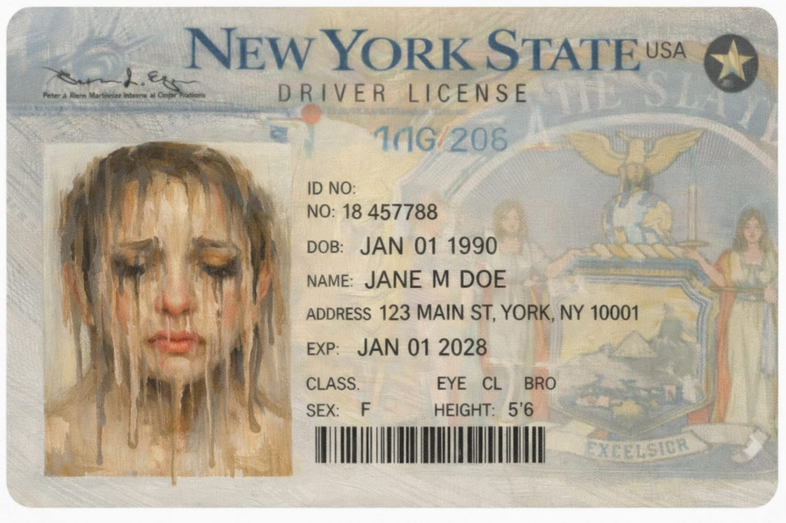
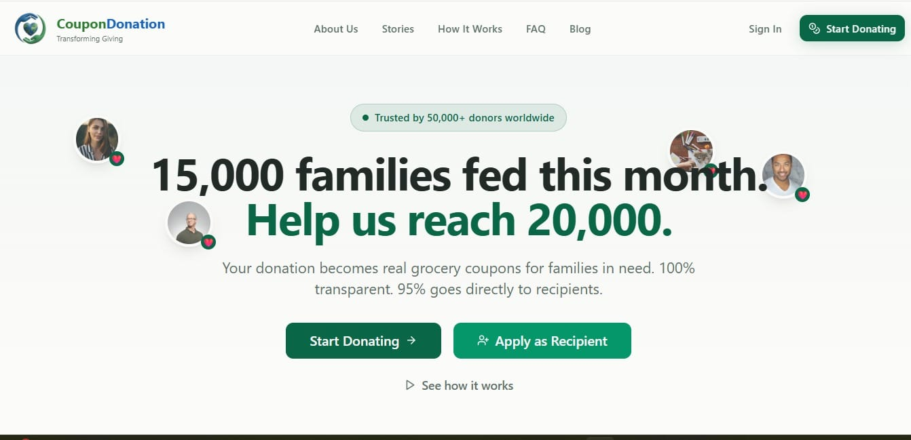

Which one is poverty?
Three men appear troubled in different ways. The viewer tries to guess who represents poverty.

What does poverty really look like?
Poverty can feel like a void that people fall into silently.

"Need food to survive."
A human story behind statistics.

Ever wonder where your money really goes?
The uncertainty people feel when donations disappear.
Transparency Builds Trust
Clear reporting helps people see the impact of their donations.
